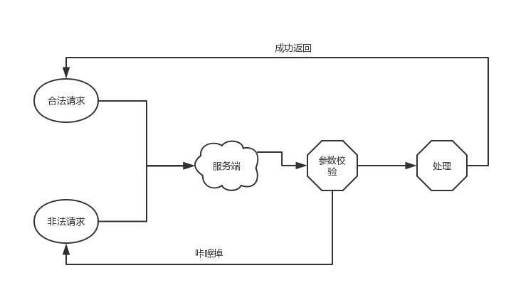

API接口鉴权
在互联网中，广泛的通过API接口传输数据，比如通过接口去查询天气预报、去查询快递、在游戏中通过接口获取用户金币经验，甚至通过接口控制智能硬件，也不是不可以的。接口使用的时候如何鉴权呢？会不会被非法调用了？被恶意刷接口了？造成不必要的损失。
一般的接口可能就是下面这种形式：
请求参数1
2
3{
"uid": 123123
}
返回数据：1
2
3
4
5
6{
"code": 0,
"data": [
"balabala"
]
}
这种接口一般情况下不会出现问题，但谁都可以调用你的借口，只要参数格式正确，这样会白白浪费掉服务器资源，甚至非法修改服务器数据。
为了解决这个问题，我们可以让请求方在请求的时候，根据所有参数加个签名，服务端会给请求端提前提供密钥，别人不知道，这样子请求来到我们这边儿之后，首先校验签名是否正确，这样就杜绝了绝大部分非法调用。
生成签名的时候将所有参数键值对排序，策略随意，比如我们就按照键排序，只要确保请求端跟服务端策略一致即可，然后生成签名1
2
3
4
5
6
7
8
9
10
11
12
13
14
15
16
17
18
19
20
21/**
* 根据参数、密钥生成签名
*
* @param $secret string 密钥
* @param $params array 参数数组
* @return string
*/
function sign($secret, $params)
{
if (!is_array($params)) {
$params = [];
}
ksort($params);
$param_str = "";
foreach ($params as $k => $v) {
$param_str .= $k . $v;
}
return md5($secret . $param_str);
}
加上签名之后，之前的请求参数就成了：1
2
3
4{
"uid": 123123,
"sign": "d41d8cd98f00b204e9800998ecf8427e"
}
如果未授权的某个coder想用你的接口，他没有密钥，在服务端校验参数的时候就会被咔嚓掉，这样非法的请求就走不到具体的处理逻辑了。

好了，非法请求的问题解决了，但是又有个问题，如果有coder抓取到我们的请求链接之后，拿着链接去重复请求，虽然没有之前影响那么大了，但还是会浪费服务器资源，影响正常服务。
这个时候，如果我们在请求的时候加上时间戳，校验参数的时候也校验时间戳，如果时间戳对不上，就表示请求过期了，也不做处理，这样就可以有效避免被抓到请求然后重复刷接口的问题。
这样之后，接口请求参数就变成这样了：1
2
3
4
5{
"uid": 123123,
"timestamp": 1531880066,
"sign": "d41d8cd98f00b204e9800998ecf8427e"
}
不过这里还有个问题，客户端跟服务端的时间可能不完全是同步的，服务端较请求端可能快可能慢，因此可以将校验时间放宽些，比如服务端校验的时候，timestamp ± 10都算合法，这个范围可根据情况设定，这样就算抓取到请求链接，最多也只能在20s内有效，就算想伪造请求，成本也会加大，需要不停地去获取新的链接。
当然了，这个方案，是没法完全杜绝非法调用的，因为抓到请求之后，总有一小段时间那个请求是可以生效的，因此对于“只读”类型的接口还是比较适用的，如果接口逻辑中有“写”的成分，就不太适合了，应该采用添加白名单、校验登录状态等方式。
除此之外，还可以对不同的调用方设置不同的密钥，请求方请求的时候带上自己的标识去签名：1
2
3
4
5
6{
"uid": 123123,
"cliend_id": 19900909,
"timestamp": 1531880066,
"sign": "d41d8cd98f00b204e9800998ecf8427e"
}
这样，我们还可以从服务端区分出来是那个也服务调用了，岂不美哉。
- 本文链接：http://www.5aikid.com/2018/07/15/接口鉴权/
- 版权声明：The author owns the copyright, please indicate the source reproduced
分享